SECCIÓN 2D
SUSPENSIÓN TRASERA
ESPECIFICACIONES
Especificaciones generales
| Aplicación | Unidad | Descripción |
| Tipo de suspensión | - | Eje de torsión de la viga |
| Amortiguador | Longitud máxima | mm (") | 444.8 ± 3 (17.51 ± 0.12) |
| Longitud mínima | mm (") | 285.0 ± 3 (11.22 ± 0.12) |
| Carrera | mm (") | 160 (6.3) |
| Rodamiento de la rueda trasera | Holgura | mm (") | 0 |
| En vacío | mm (") | 0.137 - 0.422 (1.2 - 3.9) |
| Altura del muelle helicoidal (en vacío) | mm (") | 265.5 ± 5 (10.45 ± 0.02) |
| Tipo de grasa (cubo y rodamiento de la rueda trasera) | - | GRASA ANTIF BRG M-8143 |
Especificaciones de apriete
| Aplicación | N•m | Árbol de transmisión izquierdo | Articulación |
| Tuerca que une el amortiguador de absorción energía al soporte de la carrocería | 58 | 43 | - |
| Tuerca que une el amortiguador de absorción de energía al eje trasero | 58 | 43 | - |
| Tuerca que une la palanca portadora posterior al soporte de la carrocería | 80 | 59 | - |
| Tuerca almenada del eje trasero* | - | - | - |
| Tornillo de retención del sensor de velocidad trasero del ABS | 11 | - | 97 |
HERRAMIENTAS ESPECIALES
Tabla de herramientas especiales
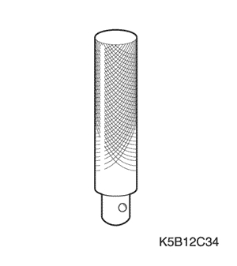
 
| DW 340-010 Extractor del cubo de la rueda delantera |
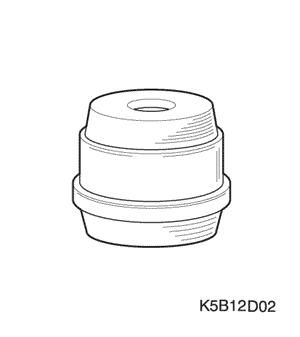
| DW 350-030 Instalador de pistas de rodamientos de rueda trasera |
DIAGNÓSTICO
Suspensión trasera
Estado | Causa probable | Medida correctora |
Ruido | Juntas sueltas. | Apriete las juntas. |
El rodamiento de la rueda está desgastado o dañado. | Sustituya el cojinete de rueda. |
Amortiguador de absorción de energía defectuoso. | Sustituya el amortiguador de absorción de energía. |
Incomodidad | Amortiguador de absorción de energía defectuoso. | Sustituya el amortiguador de absorción de energía. |
Muelle helicoidal defectuoso. | Sustituya el muelle helicoidal. |
El casquillo de la palanca portadora posterior está desgastado o dañado. | Sustituya el casquillo de la palanca portadora posterior. |
El vehículo se inclina hacia un lado | Deformación del eje trasero. | Sustituya el eje trasero. |
Deformación de la palanca portadora posterior. | Sustituya el eje trasero. |
Muelle helicoidal defectuoso. | Sustituya el muelle helicoidal. |
El casquillo de la palanca portadora posterior está desgastado o dañado. | Sustituya el casquillo de la palanca portadora posterior. |
Comprobación del juego axial de los rodamientos de las ruedas traseras
- Suelte el freno de estacionamiento.
- Levante el vehículo.
- Compruebe el juego del rodamiento de la rueda moviendo hacia adentro y hacia afuera la parte superior e inferior del neumático.
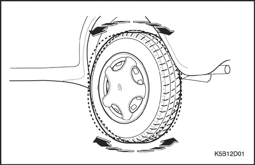
Juego del rodamiento de la rueda trasera | 0 mm (0") |
- Si el juego del rodamiento es alto, apriete la tuerca almenada.
- Si tras apretarla el juego del rodamiento sigue siendo alto, sustituya el rodamiento de la rueda.
movimiento libre del rodamiento de la rueda trasera
- Suelte el freno de estacionamiento.
- Levante el vehículo y haga girar la rueda.
- Desmonte las ruedas.
- Compruebe el par cuando se mueva el cubo con una balanza de muelle.
Estándar (en vacío) | 0,137 - 0,422 N•m (1,2 - 3,9 lb-pulg.) |
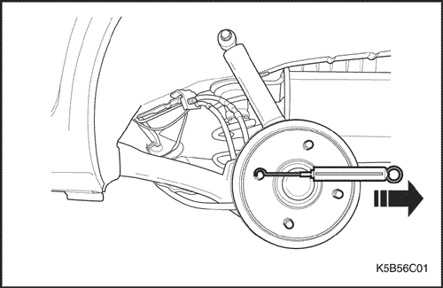
- Si el par medido sobrepasa el especificado, apriete la tuerca almenada.
- Si el par medido sobrepasa el especificado después de haber apretado la tuerca, sustituya el rodamiento de la rueda.
LOCALIZADOR DE COMPONENTES
Suspensión trasera
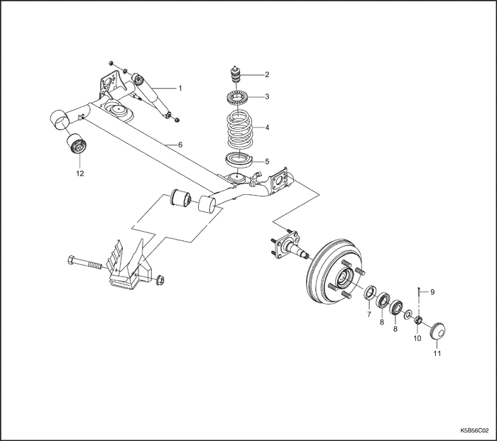
- Amortiguador
- Tope del parachoques
- Asiento superior del muelle helicoidal
- Muelle helicoidal
- Asiento inferior del muelle
- Eje trasero
- Retén de aceite
- Cojinete de rueda
- Pasador de aletas
- Tuerca almenada
- Tapa del vástago
- Casquillo de la palanca portadora posterior
MANTENIMIENTO Y REPARACIÓN
servicio con vehículo en marcha
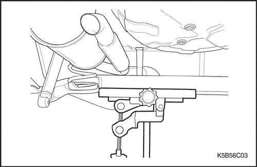
Amortiguador
Procedimiento de desmontaje
- Sujete el eje trasero con soportes regulables de gato.
- Eleve el vehículo y sujete el conjunto del eje trasero.
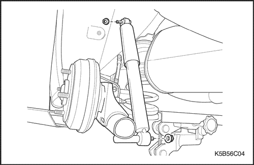
- Desmonte el amortiguador de absorción de energía.
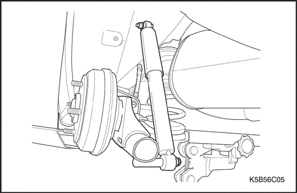
procedimiento de montaje
- Monte el amortiguador de absorción de energía.
- Coloque la tuerca que une el amortiguador de absorción de energía al eje trasero.
Apretar
Apriete el tornillo hasta 58 N•m (42 lb-pie).
- Ponga la tuerca que une el amortiguador al soporte de la carrocería.
Apretar
Apriete la tuerca del amortiguador de absorción de energía hasta 58 N•m (42 lb-pie).
- Colque los soportes de gato y baje el vehículo.
Muelle helicoidal
Procedimiento de desmontaje
- Apoye el eje trasero sobre un soporte de gato.
- Desmonte el amortiguador trasero. Consulte el apartado "Amortiguador" de esta sección.
- Separe el muelle helicoidal del eje trasero bajando el eje trasero con un soporte de gato.
Importante: Baje el eje trasero hasta que no haya tensión en el manguito de freno y en el cableado del sensor del ABS. Si hubiese tensión sobre ellos, detenga la bajada del eje trasero.
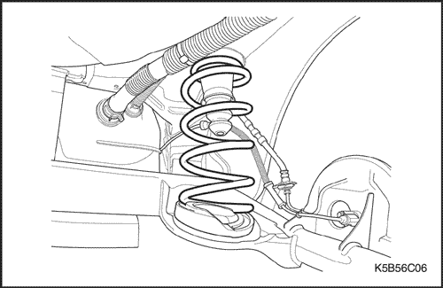
- Desmonte el muelle helicoidal
- Desmonte el 2º silenciador.
- Desmonte el muelle helicoidal.
procedimiento de montaje
- Monte el muelle helicoidal.
- Monte el amortiguador de absorción de energía trasero elevando el eje trasero con un soporte de gato.
- Monte el 2º silenciador.
Conjunto del eje trasero (incluyendo el muelle helicoidal)
Procedimiento de desmontaje
- Desmonte el tambor de freno trasero. Consulte la sección 4E, Frenos de tambor traseros.
- Desconecte la palanca portadora posterior de la carrocería.
- Sujete el eje trasero con soportes regulables de gato.
- Quite la tuerca que une el amortiguador al eje trasero.
- Quite la tuerca que une el amortiguador al soporte de la carrocería.
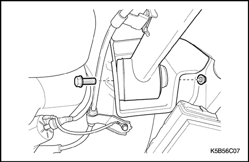
- Quite el tornillo que une la palanca portadora posterior al soporte de la carrocería.
Precaución: Cuando desenganche el eje trasero y la palanca portadora posterior, la tensión del muelle helicoidal puede provocar que el soporte regulable del gato resbale del eje trasero. Esto podría causar daños personales. Ejecute la operación con un compañero.
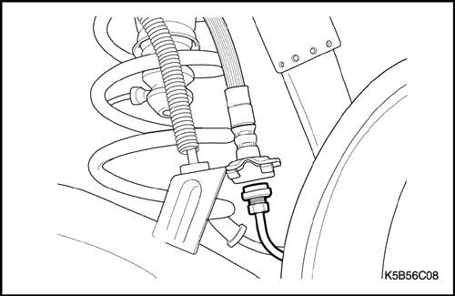
- Desconecte el tubo de freno.
- Desmonte el sensor del ABS.
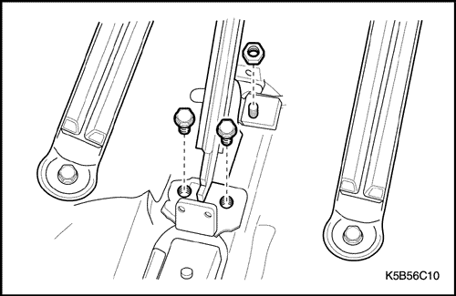
- Desmonte la palanca del freno de estacionamiento.
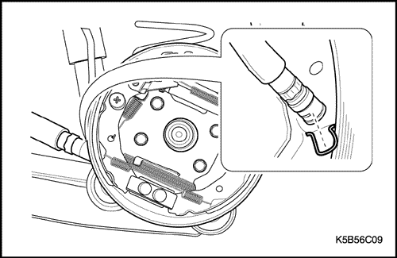
- Retire el cable del freno de estacionamiento del gancho de estacionamiento del freno trasero. Consulte la Sección 4G, Freno de estacionamiento.
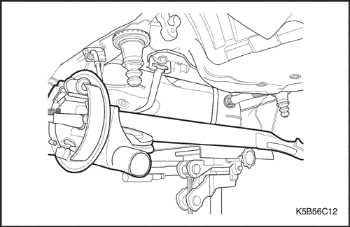
- Desmonte el eje trasero del vehículo.
- Quite el muelle helicoidal bajando lentamente los soportes del gato.
- Baje los gatos de apoyo y desmonte el eje trasero.
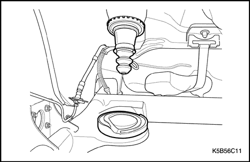
- Desmonte el tope del parachoques trasero, el asiento superior del muelle trasero y el asiento inferior del muelle trasero.
procedimiento de montaje
- Para el montaje, repita en orden inverso el procedimiento de desmontaje.
Importante: Cerciórese del diámetro del muelle antes de montarlo. El diámetro del muelle superior es menor que el del muelle inferior.
Precaución: Asegure el soporte del gato al eje trasero hasta que ponga los tornillos de la palanca portadora posterior.
- Eleve el eje tasero con la ayuda de un soporte de gato.
- Monte el tope del parachoques trasero, el asiento superior del muelle trasero y el asiento inferior del muelle trasero.
- Coloque el tornillo y la tuerca de la palanca portadora posterior.
Apretar
Apriete el tornillo de la palanca portadora posterior hasta 80 N•m (59 lb-pie).
- Coloque el muelle helicoidal y monte el amortiguador.
- Monte la palanca del freno de estacionamiento.
- Conexión del cable del freno de estacionamiento con el gancho.
- Conecte el tubo de freno y monte el sensor del ABS.
- Lleve a cabo un sangrado del sistema de frenos.
Casquillo de la palanca portadora posterior
Procedimiento de desmontaje
- Desmonte el eje trasero. Consulte el apartado "Eje trasero" de esta sección.
- Quite el casquillo de la palanca portadora posterior utilizando una presa.
procedimiento de montaje
- Inserte el casquillo de la palanca portadora posterior en dicha palanca utilizando una prensa.
- Monte el eje trasero.
DESCRIPCIÓN GENERAL Y FUNCIONAMIENTO DEL SISTEMA
Suspensión trasera
La suspensión trasera consta de un eje con dos muelles helicoidales, dos amortiguadores, dos asientos de muelle superiores y dos topes de parachoques. La estructura del eje mantiene la relación de las ruedas con la carrocería.
Cada muelle helicoidal va fijado a un asiento en los bajos de la carrocería y a otro asiento soldado a la parte superior del eje trasero.